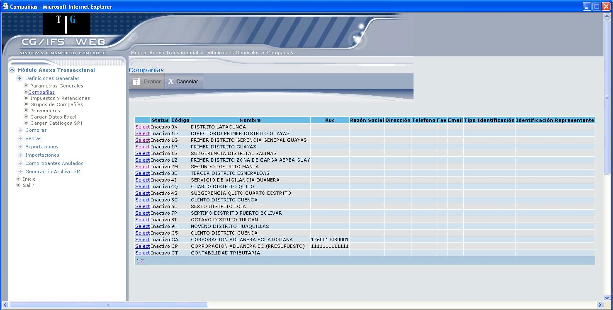
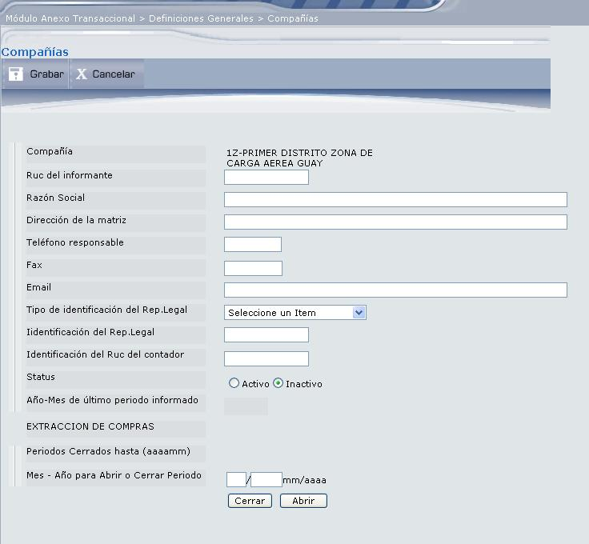
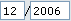

Compañías
Esta opción permite definir las compañías que se van a administrar en el módulo, mediante la pantalla que muestra la Figura 3.4. Aquí se listan las compañías creadas en el CG/Web en estado inactivos, aquí se las selecciona y se definen los datos solicitados por el SRI correspondientes a la compañía.

Figura 3. Definiciones Generales - Compañías.
Escoja la compañía dando clic en el vínculo Select, se desplegará la pantalla que muestra la Figura 3.5.
La información aportada en esta pantalla corresponde a la solicitada por el SRI según la ficha técnica, adicional a esta información se debe cambiar el estado de inactivo a activo.
Compañía:
Despliega el código y nombre de la compañía contribuyente.
Ruc del informante:
Digite el Número de RUC del contribuyente, éste debe ser un número válido, con 13 caracteres, los tres últimos deben ser 001 o similar. Debe cumplir el dígito verificador. Esta información es obligatoria.

Figura 3. Actualización de Compañía.
Razón Social: (opcional)
Digite nombres y apellidos, o razón social del contribuyente (informante), debe ser la misma Razón Social que consta en el documento RUC. No se debe ingresar el nombre de fantasía o nombre comercial.
Dirección de la matriz: (opcional)
Dirección del contribuyente al cual se solicita la información (informante), debe ser la misma dirección fiscal de la matriz que consta en el documento RUC.
Teléfono Responsable:
Corresponde al teléfono del contribuyente o persona responsable de la entrega de la información que debe ser presentada al SRI, este campo tiene 9 caracteres, en donde debe incluirse el código de la provincia respectiva, sin guiones. Ejemplos:
Pichincha 022462482
Guayas 042506750
Celular 098012126
Fax: (opcional)
Digite el número de fax del contribuyente o persona responsable de la entrega de la información que debe ser presentada al SRI, este campo consta de 9 caracteres incluido el código provincia.
Email: (opcional)
Digite la dirección de correo electrónico del contribuyente al cual se solicita la información.
Tipo de identificación del Rep. Legal:
Seleccione el tipo de identificación del Representante Legal de la empresa o el mismo contribuyente. Este campo debe ser ingresado en forma obligatoria.
Identificación del Rep. Legal:
Digite el número de identificación del Representante Legal de la empresa o del contribuyente.
Cuando sea Cédula de Identidad debe constar de 10 caracteres. Cuando sea Pasaporte debe constar hasta 13 caracteres.
Identificación del Ruc del contador:
Digite la identificación del Contador de la empresa. Este debe ser un número válido, con 13 caracteres, los tres últimos deben ser 001. Debe considerar que si el contribuyente no está obligado a llevar contabilidad, registrará su mismo número de RUC.
Status:
Permite establecer el estado de la compañía. Marque el casillero de selección correspondiente.
Año y Mes del último periodo informado.
Año – Mes de Último Periodo informado:
Corresponde al año y mes en el que el contribuyente contabiliza y en el que declaró las transacciones efectuadas.
EXTRACCION DE COMPRAS
Periodos Cerrados hasta (aaaamm):
Digite en que mes y año se va a abrir o cerrar un periodo y presione el botón Cerrar o Abrir, dependiendo del periodo que desee registrar, en el formato mm/aaaa. Por ejemplo: si desea registrar el mes 12 y el año 2006, deberá digitar .
A continuación presione el botón Grabar.
BOTONES
Created with the Personal Edition of HelpNDoc: Qt Help documentation made easy